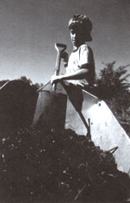
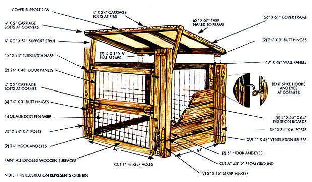

How to make it and how to use it: 7 tips for success.
RURAL AUTHOR WENDELL Berry once wrote of the farmer, "He has seen the light lie down in the dung heap and rise again in the corn." These words have sharply clarified for me the agricultural lifecycle-or even better, light cycle. Plants convert solar energy into food for animals (ourselves included), Then the wastes from those animals, along with dead plant and animal bodies, "lie down in the dung heap," are composted, and "rise again in the corn."
This cycle of light is the central reason that composting is such an important link in organic food production: It returns solar energy to the soil. In this context, such common compost ingredients as onion skins, hair trimmings, eggshells, vegetable parings, and even burnt toast are no longer seen as garbage, but as sunlight on the move from one form to another.
By making use of such substances, composting enables us to have large amounts of "dung" for our gardens without necessarily passing most of the ingredients through an animal first. It also greatly speeds up the earth's own soil-building processes to achieve results in months instead of centuries.
The benefits of using compost are so great that it's no exaggeration to call it the key to soil fertility. The end product of composting is humus, the broken-down organic matter that is the basis of soil life. In a single teaspoon of fertile soil, there are billions of microorganisms that perform numerous functions. They change nutrients into a form your plants can use, provide an ongoing flow of that food, and bind earthen particles into small aggregates, helping to build a friable soil.
Other composting benefits:
Controlled pH. Acid or alkaline soil can lock up many nutrients, making them unavailable to plants. The regular addition of compost balances the soil, helping to bring it to the crop-favoring pH range of between 6.5 and 7.5.
Heat absorption. Finished compost helps darken most soils, allowing for better absorption of heat from sunlight-which can actually extend your spring and fall growing seasons.
Turn, turn, turn: The more air it gets, the quicker it cooks. Drainage, water retention, and aeration. Imagine the life of a root, ever tunneling in search or water and food. In clayish soil, roots have trouble making headway, so they become shallow and can't reach the food and water reserves deeper down. Their oxygen supply is also easily cut off in the tightly packed soil.
Sandy soil causes a different problem; it's like a long stretch of good road with no place to get food and water. Nutrients and moisture simply percolate down out of reach.
So we want it all-good drainage, good water retention (even though the two sound almost contradictory), and openness to incorporate air. Again, humus is the cure-all. It opens up packed soils and binds together loose ones. Acting like a sponge, humus helps hold moisture, food, and air so plants can have access to all of them at will.
Nutrient retention. Chemical fertilizers provide quick-fix doses of three major nutrients: nitrogen (N), phosphorus (P), and potassium (K). Since such garden additives are highly water-soluble, plants can take them up quickly-but they can also be easily washed away by rain or irrigation. In fact, it's estimated that from 25 to 85% of the chemical nitrogen applied to soil and 15 to 20% of the phosphorus and potassium are lost to leaching.
Humus holds those water-soluble nutrients inside itself, keeping them safe from run-off and releasing them slowly to plants. (Even better, the soil microorganisms in humus release nutrients more slowly during cool weather-when crops are growing most slowly-and more quickly during warm weather-when plants are growing most actively.)
Free-choice feeding. The way in which roots and humus directly interact is probably the most fascinating argument that I know of for the use of compost. It's a miraculous process whereby plants choose their own diet.
You may have seen the words cation exchange on a soil test. Cations are positively charged molecules of different minerals like ammonium, iron, potassium, magnesium, and calcium. Since opposites attract, the negatively charged molecules of humus (and, to a lesser extent, clay as well) attract and hold the positive cations.
When a searching root comes along, surrounded by positive hydrogen ions, it strikes up a friendly exchange with the humus (or clay) molecules: The root trades its hydrogen ions for the nutrient ions of its choice. Thus humus allows plants to choose what nutrients they need.
And more. Compost also helps control nematodes and soil diseases, attracts soil building earthworms, helps plants produce their own growth stimulators, helps fix heavy metals and other toxins in the soil (instead of letting them be absorbed by the crops), adds trace minerals to the soil, and makes plants hardier and more resistant to insects and diseases. It can even be used as a healing poultice on tree wounds!
Finally, compost can be made virtually without cost at home, by mimicking the earth's recycling system. Chemical fertilizers, on the other hand, cost money and use nonrenewable fossil fuels (both as ingredients and in transporting and manufacturing).
Composting speeds up the earth's soil-building processes, to give results in months, instead of centuries.
Step #1: Choosing a site
Well, are you convinced? I hope so, because composting really is the backbone of good horticulture.
If you are ready to start your own pile of black soil magic, the first concern is location-where you'll build your compost pile. Consider these suggestions:
1. Try to locate your pile near your garden-a wheelbarrow loaded with compost is heavy.
2. If you're going to be adding some compost-building ingredients by vehicle, try to build your pile in a spot you can drive to.
3. Wetting the pile will be a lot easier if it's near a water source.
4. A good deciduous shade tree near the pile can provide some shelter from heavy thunderstorms and excessively hot summer sun; it can also let warmth-boosting fall and winter sunlight through. It'll even provide leaf material! However, evergreens (which have acidic needles), walnuts (which exude a toxin through their roots), and eucalyptuses (which have resinous leaves) are not good choices.
Step #2: Building a bin
You'll need something to put your ingredients in; actually, a straight-sided pile can be constructed with no bin or supports, and is a perfectly acceptable way to compost.
But it takes time to shape a freestanding pile; being able to toss the makings into a container can really speed the process along. In addition, if your neighbors are close they may voice aesthetic objections to a freestanding pile of decomposing materials. In that case, you can compost incognito by using an attractive homemade or commercial bin. Privacy fencing (plant or wire) might also help shut out easily offended eyes.
The creative scrounger will find that numerous materials make good bins-boards, poles, screen, wire, old pallets, concrete blocks, snow fencing, and hay bales all will serve well. At the other end of the spectrum are the fancier $70 to $200 commercial composters you can buy through gardensupply catalogs.
Somewhere between total scrounging and total spending are the two composters we designed at Mother Earth News. (See the sidebar "Any Way You Stack It..." for construction details.) The "quickie" version is a mobile pen made of hogwire panels. This low-cost model allows you to make a pile and then easily move the pen when you want to start a new pile or turn the old one. The "uptown" model is meant to be more aesthetically acceptable, yet still entirely practical. Although you could build it with just one bin (the design is basically modular), you'll do better if you build more than one enclosure so you can turn compost from one bin to the other. Better still, build a three-bin version so you can turn two half-decomposed"side" piles into the middle bin to finish cooking!
Any pile, freestanding or contained, should be at least 3' X 3' X 3' to insure sufficient mass for the composting process. I find 4' X 5' X 5' ones even better. The bottom of the pile should be exposed to the earth, and the top should be covered with black plastic or a waterproof tarp to protect it from rain and drying sun. Contained piles should also have enough open spaces on the sides for good air circulation.
Step #3: What goes in
So many types of organic matter can be composted that it's easier to list what shouldn't be put in a compost pile. Here's a partial list of what not to use:
Cat feces. While almost every other kind of animal manure makes an excellent compost ingredient. cat feces can contain a parasite (Toxoplasma gondii) or roundworm (Toxocara cati). Either of these organisms can spread serious disease to pregnant women, unborn babies, and children.
Grease and fat. OK in small amounts, but too much will clog up the composting process.
Coal, coal ashes, and barbecue briquettes. These have overly high amounts of iron and sulfur (and who knows what else in the briquettes).
Diseased plant matter. Actually, you can place diseased plants in the center of a compost pile that will be prepared in the hot method-where temperatures reach a pathogen-killing 140°F. Otherwise, burn them before composting. Polyester, plastics, and other synthetics. They just don't rot.
Urban floor sweepings. In high-traffic areas, these can contain as much as 500 parts per million of lead.
Food preserved with BHT. Research has shown that even very small amounts of this antioxidant can alter plant growth profoundly.
Overly bulky or hard material. Cornstalks, sunflower stalks, nutshells, sticks thicker than a pencil, large bones, and oyster and clam shells should be shredded or pulverized before composting. If you can't do that, put them in a long-range pile of their own.
Sludge. Commercially reprocessed is an increasingly popular soil amendment and is almost certainly pathogen-free, but I'm concerned about the heavy metals and insecticides it may contain.
And what are good compost makings? Well, for starters, how about these:
Plant residues (preferably nonsprayed), such as kitchen and garden wastes, weeds, grass clippings, leaves (go light on those from eucalyptuses, walnuts, and evergreens), straw, hay, hedge clippings, seaweed, aquatic plants, and green manure crops.
Commercial wastes, such as buckwheat hulls, rice hulls, molasses-making residue, spent hops, fruit processing wastes, commercial fishing scraps, lake dredgings, sawdust, feathers, wood ashes (in moderation), utility-company tree trimmings, and vegetable or dairy wastes from grocery stores.
Home wastes, like eggshells, hair, wool scraps, etc.
Manures from horses, fowl, cows, pigs, sheep, etc. These are even better if they're mixed with straw (i.e., used stall bedding).
Earthy Compost Books
The Rodale Guide to Composting by Jerry Minnich, Marjorie Hunt, and the editors of Organic Gardening Magazine; $17.95 postpaid from Rodale Press, 33 E. Minor St., Emmaus, PA 18098. (An updated edition will to published in January 1992.) PA residents add sales tax. Let It Rot (Updated and Revised Edition), by Stu Campbell, $8.95 plus $2.75 shipping from Storey Communications, Inc. Schoolhouse Rd., PO. Box 445, Pownal, VT 05261. Or call 8001827-8673. VT residents add sales tax.
Step #4: Recipe for success
Once you've assembled lots of appropriate organic matter from the "compost pile shopping list" above, you're just about ready to start cooking. The funny thing is, though, there is no one way to make compost-indeed, there are almost as many methods as there are experts to advocate them.
It's like baking bread: There are thousands of different recipes, but all of them have in common some basic practices and vital main ingredients. Se before you build that long-awaited heap, let's quickly review the six essentials of successful composting:
Nitrogen: For a compost to cook properly and to have maximum value for plants, it needs nitrogen, the element that promotes leaf growth. Good sources of N are pig, chicken, sheep, horse, and cow manure (ranked in descending amounts of nitrogen); fresh green plant wastes; and blood, bone, cottonseed, hoof, horn, and alfalfa meals (readily available from garden-supply centers, but somewhat costly).
Carbon. The vast bulk of any compost pile should be carbonaceous material: dried leaves, hay, straw, partially dried garden gleanings, shredded stalks-almost any dried organic matter. This is the key humus building material and the substance that binds nitrogen (an otherwise ephemeral element) into the compost.
Air. Although organic matter can decay anaerobically (without oxygen), it will do so more quickly, will retain more nutrient value, and-for that matter-cook with much less stink if it composts aerobically (with oxygen). To provide good airflow to a pile, you should, if possible, place thick, hollow material like cornstalks and sunflower stalks at the bottom of a pile. Also, be sure that any compost bins or pens have perforated sides.
Once the pile is built, you can try poking holes in numerous places with poles or branches to increase aeration-although I've never noticed that this technique made much difference. You can try using a "compost aerator," a pole with a flap like a toggle bolt that opens up when you pull it up out of your pile (available from garden-supply companies). I've never used one myself. Or you can just break down and use the age-old method of adding oxygen to a pile by turning it. Periodically, take a garden fork and turn the pile-upside down and inside out-on an adjacent spot.
Water. A compost pile needs moisture to cure. However, too much water will drown out the air and stop the process. The ideal heap, then, is damp but not soggy.
Mass. As pointed out earlier, a compost pile needs to have at least a cubic yard of bulk to heat up properly. And the bigger the better-up to a point. A pile can hardly be too long or wide, but one that is too tall (say over five feet high) may mash down and squeeze out air.
Beneficial microorganisms. These are the guys who actually do all the work. You can buy beneficial bacteria packets to inoculate your compost, but these little fellows are pretty much everywhere and will thrive if you give them an environment they like. One simple way to inoculate your piles for free is to occasionally sprinkle some good garden soil-or compost from a previous pile-on the one you're constructing.
Step #5: Layering
Now that you know the six essential ingredients of a good compost pile, you need to know how to combine them. The basic technique is simply to alternate layers of nitrogenous and carbonaceous materials. If your pile is all carbon or all nitrogen, your bacteria's diet will be too far out of whack for them to do their job.
The ideal carbon-to-nitrogen ratio is about 25 to 1, but you'd need all sorts of time and charts to figure out how to achieve that precise ratio out of the materials you may have on hand. It's easier-and perfectly effective-to just take some ingredients from the carbon list and some from the nitrogen list and layer them, experimenting with proportions until you find what works for you.
In a nutshell, then: 1) Lay down some stalky material, preferably on bare soil you have forked up some to allow easier passage for bacteria and earthworms. 2) Fork on a layer of carbonaceous material. 3) Fork on a layer of nitrogenous matter. Each layer-N or C-should be about 2" to 8" thick. And fluff it up as you add it to promote airflow. 4) Repeat steps 2 and 3 until you've finished building your pile. Sprinkle on a spadeful or two of soil or cured compost occasionally, and if your materials seem dry, spray on some water periodically as you work. 5) Cover the pile with a waterproof tarp to protect it.
I mentioned that you'll have to experiment to find the best ratio of materials. One of my "old reliable" combinations, if you'd like to try it, is alternating in a 5-5-2 pattern: a 5" layer of green matter, a 5" layer of dry matter, and a 2" layer of manure. But-contrary to some opinions-good compost piles can be made with all vegetative matter and no manure. Just make sure you have enough nitrogen (here's where something like blood meal or human urine is invaluable).
Step #6: Check your progress
If all goes well, in about four or five days the interior of your compost pile should have heated up. Indeed, before long a hand poked inside the heap will get uncomfortably hot.
If that happens, congratulations! Your compost is cooking! If your pile doesn't heat up, something's wrong. First check to see if the pile is too wet or too dry. If it's too soggy, turn it, adding more dry material as you do. If it's too dry, wet it.
Assuming the pile is properly moistened and isn't too compressed for good air circulation, your problem is that the compost mixture needs more nitrogen. So turn the pile, adding more carbonaceous matter.
Step #7: Turning compost
There's one last step to making compost: turning the pile. Here you have some choices. If you want to get your compost quickly, you'll turn the pile every time it's most intense heat (104° to 170°F) starts to drop-about every three to five days. That will add more oxygen and kick up the process. Keep that up and you should have finished compost in two months or less. If all the ingredients have been finely shredded, thinly layered, and turned every three days, it's even possible to make usable compost in two weeks!
If you want your compost in a medium amount of time, turn the pile approximately six weeks after you make it and again six weeks later. Your humus should be ready four to six months after you started it.
And if you're long on patience and short on turning time, just leave the mound alone. Such a slow pile should be ready to use after a year (or even a little longer).
Time is not the only consideration here-there are raging debates about whether "quick" or "slow" compost is better. Since quick-cured piles get well above the pathogen-killing temperature of 140°F, they're the way to go if you want to compost diseased materials (or kill weed seeds).
On the other hand, slow-pile advocates claim that cold-cured compost (which cooks at around 100°F) retains more nutrients.
So relax, dig in, and don't be afraid to experiment. Whichever way you decide to compost, you'll be making the best soil builder your garden could have. You'll also be participating in the light cycle that connects all life on this planet-plant, animal, and even human. As Leandre Poisson has pointed out, we ourselves are "light's ultimate art."
THE GREAT THING ABOUT ORGANIC decomposition that it's always ready to start without you. However, if you want to be assured of consistently composted material on a regular basis, you'll need to take the matter into your own hands and provide a setting in which the breakdown process can occur under the best conditions and with your supervision.
Fortunately, compost doesn't ask much in the way of accommodations, so depending on how much you're willing to spend, your bin can be as unassuming as a simple wire enclosure or as fancy as the covered "post-and-beam" model.
If you're short on time and not ready to spend much money on a composter, the "quickie" versions are right up your alley. It'll take about $40 and less than two hours to put together, and it's made of a 16'-long, 1/4"-wire stock panel hacksawed into 48" X 52" sections and clipped together at the corners with quick-connecting chain links. To ease the chore of filling it up, one of the wire sections can be cut in two, halfway up its 4' height, and similarly linked at the horizontal split to make a hinged flap that you can secure at the top with a couple of snap hooks.
Since the panel's wire openings are 2" X 8" at the bottom and increase to 6" X 8" toward the top, it's necessary to line the walls with cage fencing (or some other product with openings no larger than 2" X 4"). This inner grid can be secured to the outer with baling wire or leftover strands from the trimmed-down panels. To put the lid on the kettle, just invest a couple of bucks in a 5' X 7' polyethylene tarp and some S hooks or rope to keep the heavy rain off your working pile. Then when it comes time to start a new heap, simply open one corner of the enclosure, remove it, and set it up at a different location.
The "uptown" model shown in the illustration costs considerably more-perhaps as much as $200, depending on where you get your materials-and is nothing less than a weekend project. In return for this investment, though, you'll get a sturdy and attractive compost crib that's been specifically designed for ease of use.
Our version has two bins, although it could be built as a single or a triple, depending on your compost rotation schedule. Its front doors hinge both down and outward, the ventilated partition between the bins can be lowered in stages, and the front center-posts fold down against the ground. Fully opened, with the framed covers flipped back on their supports, each stall is surprisingly accessible for routine turning.
The illustration indicates the number and placement of hinges, fasteners, hooks, and other hardware. The front 4 X 4 posts should be sunk 2' into the ground if possible, leaving 5' exposed at the front and 4' at the rear. All posts are centered about 54" apart. The wall panels are 2 X 4s notched at the ends to make bolted together half-lap joints; they're secured to the posts with 40d spikes driven into the wood and bent to form slip-out hook-and-eye fasteners. Cut sections of dog-pen wire are stapled to the frames.
The tarp covers are framed in 2 X 2s, which are half lap-jointed like the wall panels. Each lid has two support ribs that are lapped and bolted in place. Wooden struts fastened to the cover frames hold them up or support them when they're flipped back, but normally they're just tied to looped spikes fastened to the centerposts.
If you take the time to build either version now, you should have a ready supply of valuable organic material available by next spring.
|
 Turn, turn, turn: The more air it gets, the quicker it cooks. |
 |
|